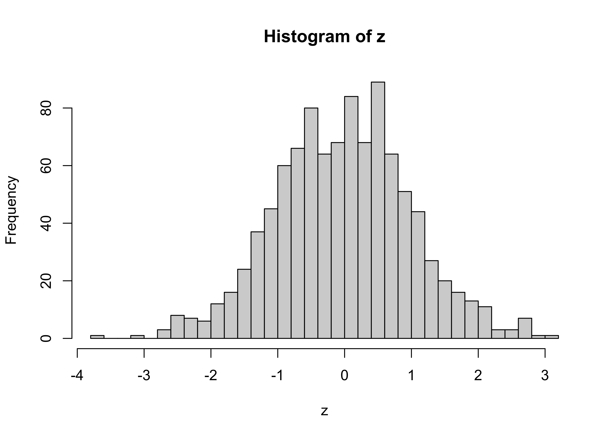
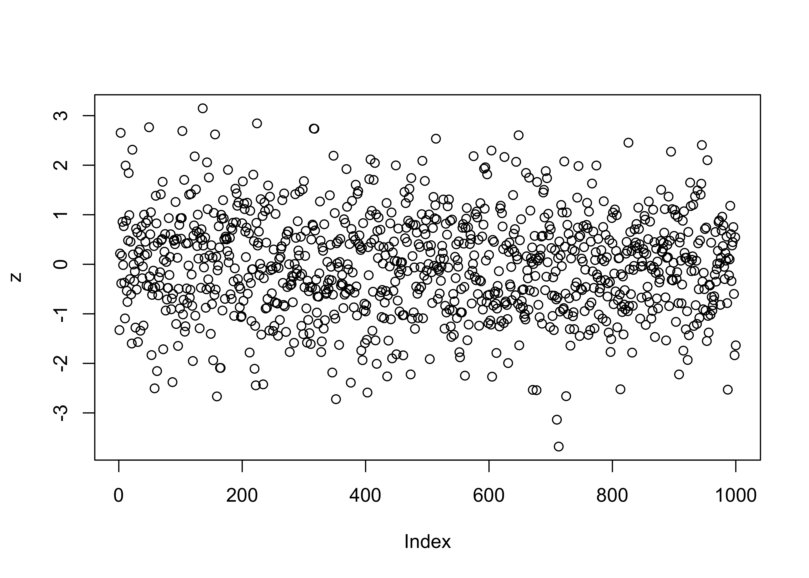
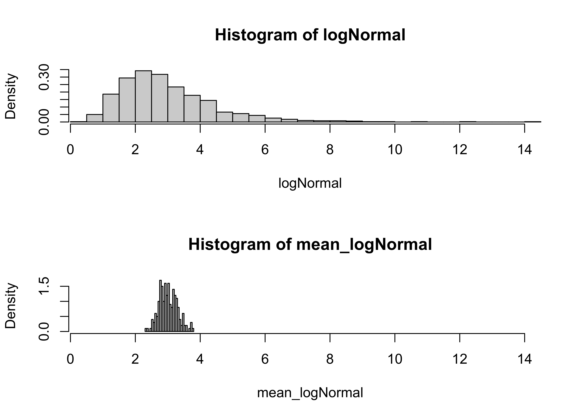
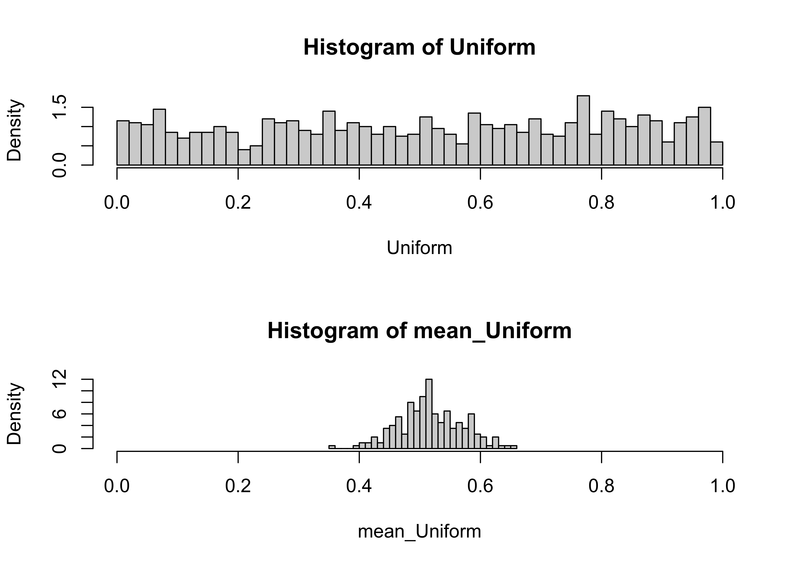

Reference distributions
NOTE: This page has been revised for Spring 2020, but may undergo further edits.
1 Introduction – Significance evaluation
Descriptive statistics (like the mean or standard deviation) are useful for characterizing a set of observations, but the significance of a particular value of a statistic (i.e. is it large or small? commonplace or unusual?) will in general not be immediately apparent, and must be judged using some external (to the data set) standard.
The significance of a particular value of a statistic (e.g. the 30-yr mean annual temperature of a place) can be evaluated by determining how rare or how commonplace that particular value is. In ordinary practice, those values of a statistic with absolute values that are equaled or exceeded in no more than 5% of the realizations of that statistic are regarded as significant.
The significance of a particular value of a statistic can be judged by comparing that value to the distribution of “all” values of the statistic. That distribution is known as the reference distribution, and in practice, can be either an empirical distribution (as represented by a histogram or cumulative frequency curve for an actual data set), or a theoretical distribution (as represented by an equation or function).
2 Empirical reference distributions
Empirical reference distributions are contructed using observed (i.e. real) data sets, which if sufficently large, allow statements to be made about the chances of observing particular values of a variable–possibly new obervations of the variable, or of observing combinations of values of a variable, such as the mean for some subset of observations.
If a relatively large data set exists, then the distribution of a particular statistic (e.g. a 30-yr mean) can be created by repeatedly
- drawing a sample from the data set,
- calculating the value of the statistic for the sample,
- saving the statistic, and then
and, after a sufficient number of samples have been taken (the more the better),
- looking at the distribution of the sample statistics (via the histogram or other plot, or by direct inspection).
2.1 Use of an empirical reference distribution
The examples here use the 1189-year-long time series of summer temperature (TSum) for the Sierra Nevada, as reconstructed from tree-ring data (Graumlich, 1993). [sierra.csv] This data set is sufficiently long enough to illustrate the idea of having a large amount of empirical information to base judgements about the significance (or the relative unusualness) of individual values or statistics.
2.1.1 How unusual is a particular observation of TSum?
To answer this question, the appropriate reference distribution is the one formed by all of the individual observations of TSum. In other words, the entire data set should be used to answer questions about the significance (or relative size) of an individual observation, simply by comparing that observation to all other observations. This comparison is facilitated by first sorting the observations, and then creating a new variable that indicates the relative position within the sorted observations of each observation.
# Sierra Nevada tree-ring summer temperature reconstructions
attach(sierra)
# sort and rank TSum values
sort_Tsum <- sort(TSum) # arranges values from low to high
rank_Tsum <- rank(TSum) # replaces values with rank number (1 to n)
# inspect the sorted and ranked values
# close window to exit
sierra_sort <- data.frame(Year, TSum, rank(TSum), sort_Tsum, rank(sort_Tsum),
Year[rank(TSum)])
head(sierra_sort)## Year TSum rank.TSum. sort_Tsum rank.sort_Tsum. Year.rank.TSum..
## 1 800 15.68 667.0 13.68 1.0 1466
## 2 801 14.00 58.0 13.70 2.0 857
## 3 802 15.41 579.5 13.71 3.0 1378
## 4 803 15.28 523.5 13.74 4.5 1322
## 5 804 16.14 849.5 13.74 4.5 1648
## 6 805 16.99 1093.5 13.75 6.0 1892## Year TSum rank.TSum. sort_Tsum rank.sort_Tsum. Year.rank.TSum..
## 1184 1983 16.79 1047.0 17.38 1182.5 1846
## 1185 1984 16.71 1018.0 17.39 1185.5 1817
## 1186 1985 16.68 1010.5 17.39 1185.5 1809
## 1187 1986 17.33 1169.0 17.41 1187.0 1968
## 1188 1987 14.26 149.5 17.45 1188.0 948
## 1189 1988 14.99 395.0 17.48 1189.0 1194The table can be inspected by opening it in a data viewer:
From this table, for example, the value 13.79 C can be seen to have occurred three times, in 1101, 1479, and 1892, and is a relatively low value of temperature, in contrast to the highest temperature value, 17.48, which occurred in 1194.
Similar information can be gained from the histogram.
# nice histogram
cutpts <- seq(12.0, 18.0, by=0.1)
hist(TSum, breaks=cutpts, probability=T, xlim=c(13,18))
lines(density(TSum))
rug(TSum)
2.1.2 What value of TSum is exceeded 10 percent of the time?
Other information can be gained by examining the empirical cumulative density function, which is a plot of the sorted values of TSum and the probability of equaling or exceeding that value in the data set
# empirical cumulative density function
ecdf_Tsum <- rank(sort_Tsum)/length(TSum)
plot(sort_Tsum, ecdf_Tsum, type="l")
sierra_ecdf <- data.frame(Year, TSum, rank(TSum), sort_Tsum, rank(sort_Tsum),
Year[rank(TSum)], ecdf_Tsum)
head(sierra_ecdf); tail(sierra_ecdf)## Year TSum rank.TSum. sort_Tsum rank.sort_Tsum. Year.rank.TSum.. ecdf_Tsum
## 1 800 15.68 667.0 13.68 1.0 1466 0.0008410429
## 2 801 14.00 58.0 13.70 2.0 857 0.0016820858
## 3 802 15.41 579.5 13.71 3.0 1378 0.0025231287
## 4 803 15.28 523.5 13.74 4.5 1322 0.0037846930
## 5 804 16.14 849.5 13.74 4.5 1648 0.0037846930
## 6 805 16.99 1093.5 13.75 6.0 1892 0.0050462574## Year TSum rank.TSum. sort_Tsum rank.sort_Tsum. Year.rank.TSum.. ecdf_Tsum
## 1184 1983 16.79 1047.0 17.38 1182.5 1846 0.9945332
## 1185 1984 16.71 1018.0 17.39 1185.5 1817 0.9970563
## 1186 1985 16.68 1010.5 17.39 1185.5 1809 0.9970563
## 1187 1986 17.33 1169.0 17.41 1187.0 1968 0.9983179
## 1188 1987 14.26 149.5 17.45 1188.0 948 0.9991590
## 1189 1988 14.99 395.0 17.48 1189.0 1194 1.0000000Again, the specific answer can be obtained by inspection of the data sheet, the histogram, or the Line plot of ProbTSum vs SortTSum.
Alternatively, the values corresponding to specific quantiles can be gotten by the following command:
## 0% 5% 10% 25% 50% 75% 90% 95% 100%
## 13.680 14.014 14.180 14.730 15.450 16.290 16.870 17.160 17.4802.1.3 How unusual is the mean of the last 30 years of the record?
The following command gets the mean of the last 30 yrs of data:
## [1] 15.848To answer the above question, the appropriate reference distribution is no longer that formed from the whole data set, but instead is the distribution that would be formed by a set of mean values of 30-year long samples from the data. This set can be obtained by repeated sampling of the TSum data using the following:
# repeated sampling and calculation of means
nsamp <- 200 # number of samples
Means30yr <- matrix(1:nsamp) # matrix to hold means
for (i in 1:nsamp) {
samp <- sample(TSum, 30, replace=T)
Means30yr[i] <- mean(samp)
}The script causes causes nsamp samples of 30 observations each to be drawn at random from the column of data containing TSum. For each sample, the mean is calculated, and stored in the variable Means30yr. The distribution of this variable (Means30yr) rather than that of the original data is the appropriate one for answering the above question.
The two empirical reference distributions can be compared by looking at their histograms:
# histograms of data and of 30-Means
par(mfrow=c(2,1))
cutpts <- seq(12.0, 18.0, by=0.1)
hist(TSum, breaks=cutpts, probability=T, xlim=c(12,20))
lines(density(TSum))
hist(Means30yr, breaks=cutpts, probability=T, xlim=c(12,20))
lines(density(Means30yr))The above procedure draws 30 years at random from TSum. It might be more appropriate to draw 30-consecutive-year samples from TSum. This can be done as follows:
# repeated sampling and calculation of means
# consecutive samples
nsamp <- 200 # number of samples
Means30yrb <- matrix(1:nsamp) # matrix to hold means
for (i in 1:nsamp) {
start <- runif(1, min=1, max=length(Year)-30)
start <- round(start)
sampmean <- 0.0
for (j in 1:30) {
sampmean <- sampmean + TSum[start+j-1]
}
Means30yrb[i] <- sampmean/30.0
}And here are the histograms:
# histograms of data and of 30-Means from consecutive samples
par(mfrow=c(2,1))
cutpts <- seq(12.0, 18.0, by=0.1)
hist(TSum, breaks=cutpts, probability=T, xlim=c(12,20))
lines(density(TSum))
hist(Means30yrb, breaks=cutpts, probability=T, xlim=c(12,20))
lines(density(Means30yrb))Note that this approach for using an empirical reference distribution is a general one–the significance of other statistics (e.g. the variance) can be evaluated the same way.
3 A theoretical reference distribution – the normal (or standard normal) distribution
Much of the time, a data set large enough to make probabilistic-type statements about the values of a statistic does not exist, or the statistic may be difficult to observe. In such cases, theoretical reference distributions allow the significance of particular values of statistics to be evaluated. One distribution that is applicable to many cases in practice is the normal distribution, and the Central Limit Theorem explains the source of that general applicability.
3.1 Density functions for the normal distribution
The standard normal distribution is widely used in inferential statistics, owing to its:
- applicability (many processes are intrinsically normally distributed, and the central limit theorem assures us that sample means, in specific, and many processes that involve summation or integration, in general, are normally distributed)
- simplicity (it has a relatively simple shape, owing to the particular choice of values for its two parameters, mu and sigma)
The standard normal distribution is described by an equation and is represented by its:
Probability density function (pdf) (R/S-Plus term is Density),
# probability density function
x <- seq(-3, +3, by=.1)
pdf_norm<- dnorm(x, mean=0, sd=1)
plot(x, pdf_norm, type="l")
Cumulative density function (cdf) (R/S-Plus term is Probability), and
# cumulative density function
x <- seq(-3, +3, by=.1)
cdf_norm<-pnorm(x, mean=0, sd=1)
plot(x, cdf_norm, type="l")
Inverse cumulative density function (invcdf) (R/S-Plus term is Quantile).
# inverse cumulative density function
pr <- seq(0, 1, by=.01)
invcdf_norm<- qnorm(pr, mean=0, sd=1)
plot(pr, invcdf_norm, type="l")
Random numbers drawn from the normal distribution can be obtained as follows


3.2 The Central Limit Theorem
The Central Limit Theorem provides the explanation for the wide applicability of the normal distribution in significance testing, because it guarantees us that (providing certain assumptions are met) that statistics (like the mean) obtained by integrating (as in summing up for computing the mean) will turn out to be normally distributed, no matter what the distribution of the underlying data is.
The Central Limit Theorem is a mathematical demonstration that statistics (like the mean) that are based on summations or integrations of a set of observations are normally distributed, no matter what the distribution is of the data from which samples are being drawn. The theorem therefore assures us that the normal distribution is the appropriate reference distribution for a sample mean to be compared with, in order to judge the relative size of that sample mean_
3.2.1 Empirical demonstration of the Central Limit Theorem
Generate 1000 random numbers from four different distributions, the standard normal, the normal, the log-normal and uniform distributions. Histograms of the random numbers will make it clear what the shape of the distributions are like
n <- 1000
stdNormal <- rnorm(n, mean=0, sd=1)
Normal <- rnorm(n, mean=4.0, sd=2.0)
logNormal <- rlnorm(n, meanlog=1.0, sdlog=0.5)
Uniform <- runif(n, min=0.0, max=1.0)The following script generates nsamp sample means from one of these distributions
# take repeated samples from each distribution and calculate and save means
# repeated sampling and calculation of means
nsamp <- 200 # number of samples
mean_stdNormal <- matrix(1:nsamp) # matrix to hold means
mean_normal <- matrix(1:nsamp) # matrix to hold means
mean_logNormal <- matrix(1:nsamp) # matrix to hold means
mean_Uniform <- matrix(1:nsamp) # matrix to hold means
for (i in 1:nsamp) {
samp <- sample(stdNormal, 30, replace=T)
mean_stdNormal[i] <- mean(samp)
samp <- sample(Normal, 30, replace=T)
mean_normal[i] <- mean(samp)
samp <- sample(logNormal, 30, replace=T)
mean_logNormal[i] <- mean(samp)
samp <- sample(Uniform, 30, replace=T)
mean_Uniform[i] <- mean(samp)
}Histograms of the original data, as well as of the sample means can be obtained with the following script.
# histograms of data and of sample means
par(mfrow=c(2,1))
# standard Normal
xmax <- max(stdNormal)
xmin <- min(stdNormal)
hist(stdNormal, nclass=40, probability=T, xlim=c(xmin,xmax))
hist(mean_stdNormal, nclass=40, probability=T, xlim=c(xmin,xmax))
# Normal
xmax <- max(Normal)
xmin <- min(Normal)
hist(Normal, nclass=40, probability=T, xlim=c(xmin,xmax))
hist(mean_normal, nclass=40, probability=T, xlim=c(xmin,xmax))# log Normal
xmax <- max(logNormal)
xmin <- min(logNormal)
hist(logNormal, nclass=40, probability=T, xlim=c(xmin,xmax))
hist(mean_logNormal, nclass=40, probability=T, xlim=c(xmin,xmax))
# Uniform
xmax <- max(Uniform)
xmin <- min(Uniform)
hist(Uniform, nclass=40, probability=T, xlim=c(xmin,xmax))
hist(mean_Uniform, nclass=40, probability=T, xlim=c(xmin,xmax))
3.3 Other theoretical reference distributions
Although the normal distribution is applicable in a number of situations (owing to the implications of the Central Limit Theorem), other situations arise, in which other referernce distributions may apply.
4 Readings
- Owen (The R Guide): Ch. 6.